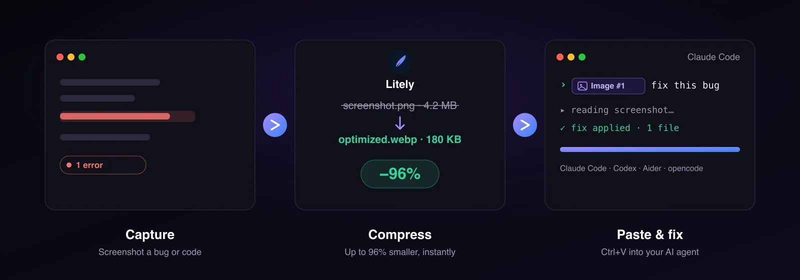
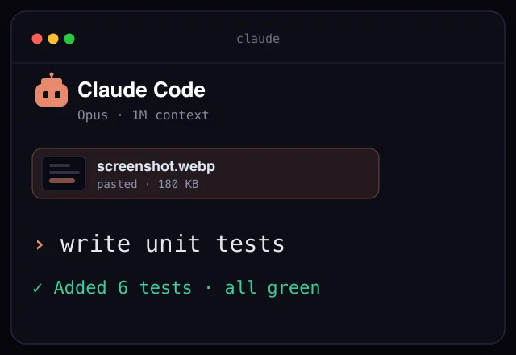
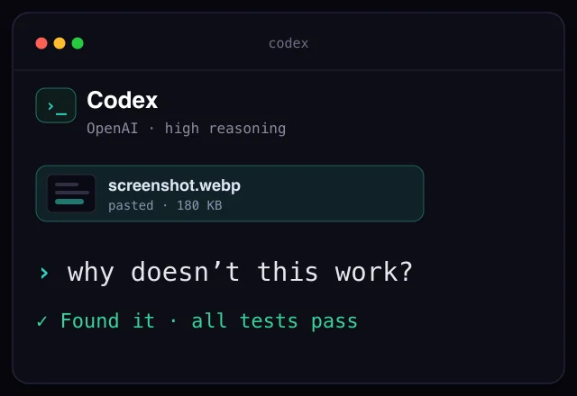
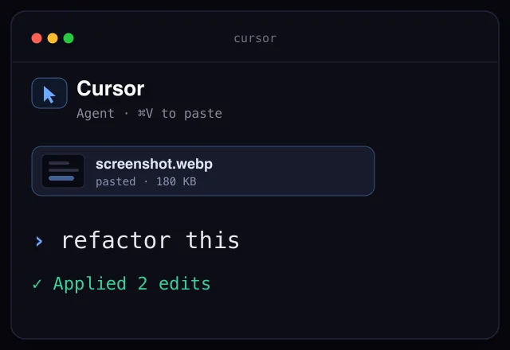

Сжимай всё.
Автоматически.
Добавь папку — Litely следит за новыми файлами и сжимает их в фоне. Видео, изображения, без усилий.
macOS 11+ · Нативное приложение


Сжатие и загрузка в Jira / GitLab — вставь и готово
Ни один другой инструмент так не умеет. Сделайте скриншот или запишите видео — Litely сожмёт до 90%, сконвертирует формат и поместит результат в буфер обмена. Переключитесь в Jira или GitLab, вставьте в комментарий — файл загрузится прямо в задачу или мерж-реквест. Разметка вставится автоматически. Сохраните — готово.
Снимите
Сделайте скриншот или запишите видео. Сохраните в папку наблюдения Litely — сжатие начнётся мгновенно.
Автосжатие и конвертация
До 90% меньше. Конвертация формата на лету — JPG → WebP, MOV → MP4. Оптимизированный файл сразу попадает в буфер обмена.
Вставьте в Jira или GitLab
Откройте комментарий в Jira или мерж-реквест в GitLab и нажмите Cmd+V на Mac или Ctrl+V на Windows/Linux. Файл загрузится с индикатором прогресса.
Разметка готова
Разметка платформы вставится автоматически — Jira wiki-синтаксис для Jira, Markdown для GitLab. Сохраните комментарий — вложение привязано.

Вставляйте скриншоты прямо в Claude Code, Codex и любой ИИ-агент
Если вы живёте в Claude Code, Codex или любом ИИ-агенте — это та самая ежедневная фишка, которой вам не хватало, и это невероятно удобно. Самый быстрый способ объяснить ассистенту задачу — картинка: сделайте скриншот бага, трейса ошибки, макета из Figma или куска кода, и Litely сожмёт его на лету и положит в буфер обмена. Перейдите в терминал, нажмите Cmd+V на Mac или Ctrl+V на Windows/Linux и скажите «поправь это» или «собери это». Работает с инструментами, которыми вы уже пользуетесь — Claude Code, OpenAI Codex, Aider, Amp, opencode, Kimi CLI, Cursor и другими. Лёгкое изображение загружается мгновенно, тратит меньше токенов и всегда остаётся в пределах лимита на размер картинки.

Сделайте скриншот кода или бага
Снимите кусок кода, трейс ошибки, лог консоли или сломанный интерфейс. Сохраните в отслеживаемую папку Litely — сжатие начнётся в момент появления скриншота.
Автосжатие и копирование
До 90% меньше в WebP, PNG или JPEG — форматах, которые принимает любой ИИ-CLI. Оптимизированная картинка сразу попадает в буфер обмена.
Вставьте в свой ИИ-инструмент
Нажмите Cmd+V на Mac или Ctrl+V на Windows/Linux в Claude Code, Aider, Amp или Kimi CLI, прикрепите к OpenAI Codex или opencode либо бросьте в Cursor, Cline и Kilo Code. Сжатый скриншот попадает прямо в запрос.
Попросите ИИ доработать
Напишите «поправь это», «напиши unit-тест» или «почему это не работает?». Ассистент видит скриншот и правит код за вас.
Цикл, в который влюбляются разработчики — скриншот → Cmd+V/Ctrl+V → «поправь это». Прямо внутри Claude Code, Codex или вашего любимого ИИ-агента.



Работает с любым языком и фреймворком — JavaScript, TypeScript, Python, Rust, Go, Java, Kotlin, Swift, C, C++, C#, PHP, Ruby, Scala, Dart, Elixir, Haskell, Bash, Lua, Zig, R, SQL, HTML/CSS и другими.
Автосжатие папок — настрой и забудь
Добавь до 3 папок — Litely следит за ними круглосуточно и сжимает каждый новый файл автоматически.
- Наблюдение до 3 папок одновременно
- Обнаружение новых файлов в реальном времени
- Настройки сохраняются между перезапусками
- Умная фильтрация — пропускает скрытые, сжатые и выходные файлы
- Сам предлагает папку скриншотов при первом запуске
Сжатие видео — кодеки H.264, H.265, AV1
От H.264 до AV1 — выбери идеальный баланс между совместимостью и степенью сжатия.
- GPU-ускорение через VideoToolbox (macOS)
- 3 пресета качества: Компактный, Оптимальный, Максимальный
- Двухпроходное кодирование для лучшего качества/размера
- Конвертация: MP4, MOV, AVI, MKV, WebM, FLV, GIF
- Извлечение аудиодорожки из видео
- Ресайз видео (вписать / ширина / высота)
- Целевой размер файла — автоподбор качества
Степень сжатия →
Сжатие изображений — WebP, AVIF, JPEG, PNG, SVG
От WebP до AVIF и SVG — выбери формат и качество для каждого случая.
- Ползунок качества 1–100
- Удаление метаданных EXIF и ICC
- Режим максимального усилия сжатия — медленнее, но лучше сжатие
- Целевой размер в КБ — автоподбор качества
- Пакетный ресайз — несколько размеров из одного изображения
- Визуальное сравнение до/после
- Оптимизация SVG и конвертация растра в вектор
Входные форматы: WebP, AVIF, JPEG, PNG, SVG, HEIC/HEIF, BMP, TIFF
Управление пакетным сжатием
Пауза, возобновление, отмена — управляй каждой задачей сжатия.
Пауза и возобновление
Ставь на паузу, возобновляй или отменяй отдельные задачи.
Прогресс в реальном времени
Текущий прогресс с оценкой оставшегося времени.
Умная история
История задач по датам с автоочисткой через 7 дней.
Отслеживание размера
Входной размер, выходной размер и процент уменьшения для каждого файла.
Прогресс в трее
Прогресс пакетной обработки прямо в системном трее.
Группировка по датам
Задачи сгруппированы: сегодня, вчера и ранее.
Системная интеграция — работает в фоне
Работает тихо в фоне и не мешает.
Drag & Drop
Перетащи файлы прямо в окно приложения.
Системный трей
Живёт в трее — всегда готов, никогда не мешает.
Плавающий прогресс
Панель прогресса поверх всех окон.
Автокопирование
Сжатый файл автоматически копируется в буфер обмена.
Автоудаление
Опционально удалять оригиналы после сжатия.
Тёмная и светлая
Обе темы — переключайся под настроение.
Обратная связь
Сообщите о баге или предложите фичу прямо из приложения — приложите скриншот и следите за ответами во вкладке «Мои обращения».
Нативная скорость — 7 МБ, мгновенный запуск
Всего 7 МБ. Мгновенный запуск, быстрая работа, почти не занимает места.
- Нативный бинарник — мгновенный запуск
- Аппаратное ускорение GPU-кодирования
- Плавный интерфейс даже с тысячами файлов
- Мгновенный отклик интерфейса, ноль задержек
Кому нужна программа для сжатия видео и изображений?
В первую очередь — для разработчиков и IT-команд: вставляйте скриншоты прямо в Claude Code, Codex, Cursor, Jira или GitLab. И так же удобно аналитикам, техписателям и креаторам.
Разработчики
Вставьте скриншот бага, ошибки или дизайна в Claude Code, Codex или Cursor и получите фикс — плюс сжимайте ассеты для веба.
Project-менеджеры
Скриншот, сжатие и вставка прямо в Jira или GitLab — разметка вставляется автоматически, файлы до 90% меньше.
QA и тестировщики
Прикрепите лёгкий репро-скриншот к тикету или бросьте его в ИИ-агент и спросите «почему это падает?».
Аналитики
Пишете спеку? Скопируйте график или таблицу, вставьте в ИИ — «преврати это в…» — и держите документы лёгкими.
Техписатели
Документация полна скриншотов? Сожмите их в разы, чтобы страницы грузились быстро и оставались чёткими.
Дизайнеры
Делитесь пиксель-перфект макетами за секунды или вставьте дизайн в ИИ — пусть соберёт UI.
Контент-креаторы
Сжимай видео перед загрузкой на YouTube, TikTok или Instagram.
Фотографы
Пакетная оптимизация для веб-галерей и клиентов.
Все остальные
Освободи гигабайты дискового пространства без потери качества.
Часто задаваемые вопросы о сжатии видео и изображений
Как Litely сжимает видео?
Litely использует кодеки H.264, H.265/HEVC и AV1 с GPU-ускорением на macOS. Выберите пресет качества или задайте целевой размер файла — Litely подберёт качество автоматически. Двухпроходное кодирование обеспечивает лучшее соотношение качество/размер.
Какие форматы поддерживает Litely?
Видео: MP4, MOV, AVI, MKV, WebM, FLV, GIF. Изображения: JPEG, PNG, WebP, AVIF, HEIC/HEIF, BMP, TIFF, SVG. Выходные форматы видео: MP4, MKV, WebM. Изображений: WebP, AVIF, JPEG, PNG, SVG.
Litely бесплатный?
Litely — платный, но небольшая часть функций доступна бесплатно. Бесплатный тариф покрывает базовое сжатие; Pro открывает все кодеки, безлимит, GPU-ускорение, ресайз, PDF и больше.
Работает ли Litely с Cursor и другими ИИ-редакторами?
Да. Litely кладёт сжатый скриншот в буфер обмена — вставьте его в Cursor, Cline или Kilo Code по Cmd+V, либо в терминальные агенты Claude Code, Codex, Aider и Kimi CLI по Ctrl+V. Лёгкая картинка грузится быстрее, тратит меньше токенов и остаётся в пределах лимита на размер картинки.
Зачем сжимать скриншот перед вставкой в ИИ?
Лёгкие картинки грузятся мгновенно, тратят меньше токенов и всегда остаются в пределах лимита на размер у Claude Code, Codex и Cursor — скриншот прикрепляется надёжно. Litely уменьшает их до 90% в WebP, PNG или JPEG — форматах, которые принимают модели с поддержкой зрения.
Чем Litely отличается от HandBrake?
HandBrake — ручной кодировщик только для видео: каждый файл настраиваешь вручную. Litely — это автоматический пайплайн: добавь папку наблюдения, и каждый новый файл — видео, картинка или PDF — сожмётся сам, без настройки по одному. Плюс пакетный ресайз, интеграция с Jira и GitLab и нативный лёгкий интерфейс (<40 МБ памяти).
Litely работает в фоне?
Да. Litely живёт в системном трее и мониторит папки 24/7. Новые файлы обнаруживаются и сжимаются автоматически. Прогресс виден через плавающую панель или иконку в трее.
Можно ли сжать изображения без потери качества?
Да. Поддерживается lossless PNG и near-lossless WebP/AVIF. Ползунок качества 1-100, визуальное сравнение до/после. Типичная экономия: 80-90% без видимых различий при качестве 85+.
Может ли Litely конвертировать HEIC-фото с iPhone?
Да. Litely нативно читает HEIC/HEIF-изображения с iPhone и iPad. Перетащите в отслеживаемую папку или drag-and-drop — Litely конвертирует в WebP, AVIF, JPEG или PNG с экономией до 90%. Пакетная обработка тысяч фото автоматически.
Как сообщить об ошибке или предложить функцию?
Прямо в Litely. Нажмите кнопку обратной связи в шапке, опишите проблему или идею и приложите скриншот или видео — перетащите или вставьте через Cmd+V. Обращение уходит напрямую разработчику, а ответы можно отслеживать и отвечать на них во вкладке «Мои обращения» — без отдельной регистрации и не выходя из приложения.
Какие операционные системы поддерживаются?
macOS 11+ (Apple Silicon и Intel), Windows 10+, Linux (Ubuntu 22+, Fedora 38+).
Скачать Litely — сжатие видео и изображений
Есть бесплатный тариф — Pro открывает всё. Выберите платформу.
«Не удаётся открыть Litely»? Решается за 5 секунд.
Litely — молодое независимое приложение, и оно быстро растёт. Чтобы пока оставаться бесплатным и честным, мы ещё не оплатили нотаризацию Apple ($99 в год), поэтому при самом первом запуске macOS один раз показывает предупреждение о «неустановленном разработчике». Это полностью безопасно и занимает пять секунд — выберите любой удобный способ ниже.
- Правый клик (или Control-клик) по Litely в Программах
- Выберите Открыть в меню
- Нажмите Открыть ещё раз для подтверждения
Вставьте команду и нажмите Return:
xattr -dr com.apple.quarantine /Applications/Litely.app Это временно. Полная нотаризация Apple появится, как только Litely немного подрастёт — и тогда этот шаг исчезнет навсегда. Спасибо, что с нами с самого начала. 💜